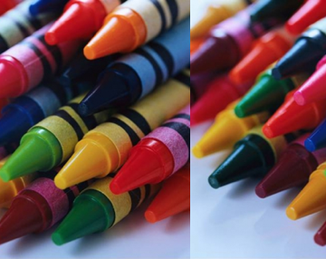
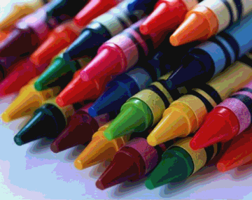
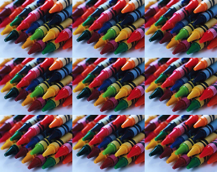
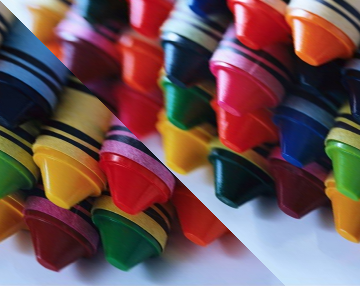
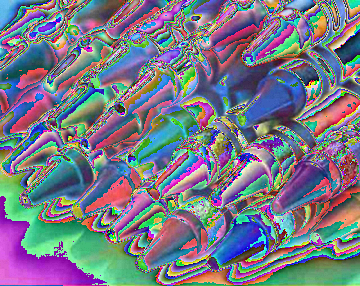

PreLab 04
Exceptional Pictures and ImagesDue by the beginning of lecture on Wednesday, September 24th
In this prelab you will formulate some of the ideas necessary to complete Lab 04. Please type up your solutions, and hand in a paper copy before the beginning of lecture on Wednesday. Remember, no late prelabs allowed!
Part 0 - Function Practice
def main() :
blarg(5)
blorf(3)
def blarg(x) :
print(x*x)
print(x)
def blorf(y) :
blarg(y+1)
print(y)
blarg(y-1)
main()
2. What is the output of the following program?
def main() :
x, y = 2, 7
print(x, y)
x = blunk(x, y)
print(x, y)
def blunk(y, x) :
print(x, y)
y = y * y
x = x//2
print(x, y)
return x*y
main()
Part 1 - Using Exceptions
4. Write a chunk of code with the following behavior. First, it should prompt the user to enter four numbers (x1, y1, x2, y2) separated by commas. (Note: x1,y1,x2,y2 = eval(input("please enter 4 numbers separated by commas: ")) will achieve this.) It should then compute and print the slope of the line that joins the points (x1,y1) and (x2,y2). Your code should handle at least three possible exceptions.
Part 3 - Mind Mastery
Mastermind is a neat (although oftentimes frustrating) puzzle game. It works a something like this: There are two players. One player is the codemaker (your porgram), the other is the codebreaker (the user). The codemaker chooses a sequence of four colored pegs, out of a possible six colors (red, blue, green, yellow, orange, and purple). He may repeat colors and place them in any order he wishes. This sequence is hidden from the codebreaker. The codebreaker has 10 chances to guess the sequence. The codebreaker places colored pegs down to indicate each of her guesses. After each guess, the codemaker is required to reveal certain information about how close the guess was to the actual hidden sequence.
Describe the Problem:
The problem you will solve on your lab is as follows.
input: repeatedly get guesses from the user, until they either guess the code, or run out of guesses.
goal: generate a random code, and correctly provide the user with feedback on their guesses.
Understand the Problem:
The trickiest part of this game is determining how to provide feedback on the codebreaker's guesses.
In particular, next to each guess that the codebreaker makes, the codemaker places up to four clue pegs. Each clue peg is either black or white. Each black peg indicates a correct color in a correct spot. Each white peg indicates a correct color in an incorrect spot. No indication is given as to which clue corresponds to which guess.
For example, suppose that the code is RYGY (red yellow green yellow). Then the guess GRGY (green red green yellow) would cause the codemaker to put down 2 black pegs (since guesses 3 and 4 were correct) and 1 white peg (since the red guess was correct, but out of place). Note that no peg was given for guess 1 even though there was a green in the code; this is because that green had already been "counted" (a black peg had been given for that one).
As another example, again using RYGY as our code, the guess YBBB would generate 1 white peg and 0 black; yellow appears twice in the code, but the guess only contains one yellow peg. Likewise, for the guess BRRR, only 1 white peg is given; there is an R in the code, but only one.
Check here for an online graphical version of the game.
5. Assuming the code is RYGY, fill in the appropriate number of black and white pegs for each guess.
| guess | black pegs | white pegs |
|---|---|---|
| YYYY | ||
| YRYR | ||
| BBPO | ||
| PGYR | ||
| YYYG | ||
| RYGY |
6. Consider the following algorithmic approach for calculating the number of white pegs to be awarded for a given guess.
set a white counter to 0
loop through the four positions of the guess
loop through the four positions of the code
if the current code character matches the current guess character
and the guess and code positions are not the same,
increment the white counter and exit the inner loop
What goes wrong with this algorithm? Give an example of a code, a guess, the value that should be generated and the value that this pseudocode would generate.
7. Decribe precisely how you would go about determining the appropriate number of white pegs to award. As before, your description should be in clear, unambiguous pseudocode.
Part 2 - Picture This
In the lab proper, you'll be using graphical primitives (rectangles, circles, lines, etc.) to create an image of your own choosing.
Part 3 - Image Manipulation
In this (major) portion of the lab you'll create a nifty program that reads in an image and does a sequence of modifications to that image, as specified by the user. Things like inverting the image, mirroring it, increasing or decreasing the contrast, etc.
Describe the Problem:
The problem you will solve on your lab is as follows.
input: Get a string filename from the user that represents the image they would like to edit.
output: Allow the user to edit the image given the provided editing options. Display their results to the screen and enjoy!
Understand the Problem:
Your program should be capable of the following operations:
- Flip Horizontally
- Scroll Horizontally
- Make Negative
- Zoom
- Posterize
- Rotate 180 Degrees
- Your Own Effect
Examples of these operations are given below.
| Original Image: | |
 |
|
| Flip: | Scroll: |
 |
 |
| Negative: | Zoom: |
 |
|
| Posterize: | Rotate 180: |
|  |  |
| Other Ideas | |
|---|---|
| Find Edges: | Tiled: |
 |
 |
| Shear: | Bizarre: |
|  |  |
Design an Algorithm:
Your program should begin by printing a welcome to the user, informing them just how fortunate they are to have stumbled upon your very own image editor. You should then prompt the user in the console to pick a file to load in. As will be standard from here on out, you'll want to be robust against bad user input, so if the user enters something that isn't a valid file and an exception is thrown, you can catch it and prompt them again for a file.
Once you have an image loaded, display it. Then use a while loop to repeatedly print a table of possible operations, prompt the user to select one of these operations to apply to their image, apply the selected operation (create a distinct function for each operation), and display the resulting image. Thus, the user might choose to reflect the image, then increase the contrast (of the now reflected image), and then blur (the now reflected and contrasty image). At each step, the user should be able to see the resulting image. Again, be sure to handle bad input from the user.
Of course, this still leaves out the details of each operation, for which you will want to write pseudocode before you start writing functions. Some details are given below.
Scrolling: Scrolling should ask the user to specify some number of pixels, and should then shift the image that many to the right. Pixels that would fall off the edge of the image should wrap around to the other size. Modular arithmetic may come in handy here.
Negatives: The negative of an image is creating by inverting each color channel. So if the red value of a pixel were 255, it should become 0. If it were 254, it should become 1, and so on, down to 0, which should become 255. Similarly for green and blue.
Zoom: This method result in an image of the same size as the original, but consist of the center of the image blown up by a factor of 2. So if the image has width w and height h, zooming should expand the middle w/2 by h/2 region to fill the whole picture.
Posterize: A typical pixel can have one of 256 value for each color channel. In a posterized image, this number is drastically decreased. Each color channel value should be rounded to the nearest multiple of 32.
In this lab, you'll be writing a program that performs many of the above transformations on images. In preparation, you'll be generating pseudocode to perform some of these operations. As an example, in question 0, we ask how to remove all red from an image. A good pseudocode solution is given below. Give your own pseudocode solutions to the remaining problems.
Hints:
For some of these operations, you may want to create a new image rather than by simply modifying the existing image.
You can not change the position of a pixel. You can read the r, g and b values for any pixel, and you can set the r, g and b values of any pixel.
In some cases, you may want to create a copy of the original image and thus be able to make changes but still have access to the original.
Sample answer:
loop over x values from 0 to W - 1 (You can assume W is the width)
loop over y values from 0 to H - 1 (You can assume H is the height)
change the red value of the pixel at (x,y) to 0
9. Scroll the image over by 10 pixels.
10. Negate the image.
Honor Code
If you followed the Honor Code in this assignment, write the following sentence attesting to the fact at the top of your homework.
I affirm that I have adhered to the Honor Code in this assignment.